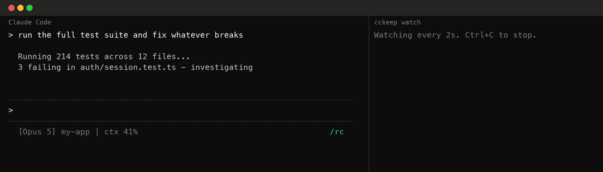

Your session is still running.
Your phone doesn't know.
Claude Code 2.1.232 fixed the 31-second give-up. What it left behind: disconnects that still need a manual /remote-control, and a quota window that stops the session cold. cckeep notices, and re-arms it — without ever typing into one that's busy.
Zero dependencies · zero cloud · zero telemetry — it reads your tmux panes and nothing leaves the machine.

What Claude Code still leaves to you.
Every one of these outlasts it. The link closes, and the documented recovery is to walk back to your desk and type /remote-control.
The link stays up while the session's heartbeats don't. Claude Code re-registers for about 30 minutes, then disconnects — and the documented recovery is to run /remote-control.
A VPN or network change puts something in the path that answers 403. Claude Code tolerates it for three minutes, then disconnects and names what refused. Nothing brings it back.
Nothing to do with the connection: the window your session was spending runs out, and Claude Code prints a banner and stops. No version of it picks the work back up when the window resets.
Sometimes it just sits in “reconnecting” — issue #34255, open since March, 99 👍. Whether it still reproduces against the reconnect path 2.1.232 reworked is unconfirmed.
It will not type into a session that's working.
A watchdog that types into your terminal on a timer is a liability unless it's certain the moment is safe. Every rule below is enforced and tested.
The pane is captured three times, on an interval that is deliberately not round — an animation whose period divided it would alias into identical frames. A running turn animates a spinner and a token counter, so identical captures mean nothing is happening, different ones mean hands off.
Permission prompts turn Enter into a selection. If a selection marker is on screen, the pass is skipped entirely.
/remote-control opens a status panel with a QR code. cckeep presses Enter there only when it opened the panel itself.
Only panes seen connected at least once are ever chased. Disable Remote Control deliberately and it stays off.
One action per pane per five minutes, so a genuinely broken link can't turn into a stream of keystrokes.
The decision is made from one capture, then re-verified after the wait. Reconnected in between? Dialog appeared? Nothing is sent.
--dry-run prints exactly what it would do and sends nothing. Run it for a day before you trust it.
What it watches for.
| State on screen | What it means | What cckeep does |
|---|---|---|
/rc active | connected | remembers the pane, nothing else |
/rc reconnecting | Claude Code is reconnecting, with about 30 minutes to do it | waits — this is the case 2.1.232 made reliable |
/rc reconnecting · 35 min | past Claude Code's own window: wedged (#34255), or an outage still running | cycles the bridge: opens the panel, disconnects, reconnects |
Remote Control disconnected | gave up | re-arms immediately |
| no indicator, pane had one before | notification scrolled away | re-arms after 4 quiet checks |
| no indicator, pane never had one | not your setup | nothing, ever |
One command away.
npm i -g cckeep # install globally — an npx path would vanish cckeep enable # launchd on macOS, systemd user timer on Linux cckeep # what it sees right now — changes nothing cckeep watch # run in the foreground instead of scheduling cckeep doctor # tmux, panes, scheduler, paths cckeep logs # what it has done cckeep disable # remove the background job
A session started in a bare terminal can't be reached from another process — there's no channel to type into, so no tool can help it. Restarting the process isn't an alternative: that ends the conversation, which is the thing you were trying to save.
The README has a drop-in shell function that wraps interactive launches only, so claude update and claude -p keep behaving normally.
The best outcome is that this becomes unnecessary.
cckeep re-arms a connection and picks stopped work back up. Claude Code 2.1.232 already removed the biggest reason it existed, which is exactly the right direction. If #34255 gets fixed too, and a session resumes on its own when its quota window resets, the right move is to archive this repo. Until then, a 👍 over there is worth more than a ⭐ here.